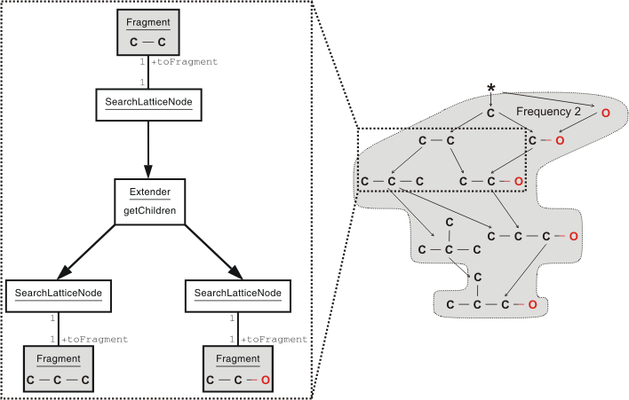
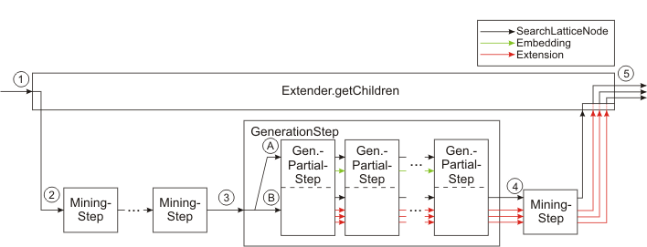

|
ParSeMiS (built 2008-09-04) Parallel and Sequencial Mining Suite |
||||||||
| PREV PACKAGE NEXT PACKAGE | FRAMES NO FRAMES | ||||||||
See:
Description
| Interface Summary | |
|---|---|
| Extender<NodeType,EdgeType> | This interface encapsulates the functionality to extend one (or more) parent nodes to a set of children |
| Extension<NodeType,EdgeType> | This interface encapsulate the required abilities of a extension of a fragment. |
| MiningStepFactory<NodeType,EdgeType> | This class is a factory for mining steps |
| Class Summary | |
|---|---|
| CanonicalPruningStep<NodeType,EdgeType> | This class implements the general pruning of non-canonical fragments. |
| CompleteClosedStep<NodeType,EdgeType> | This class detects as described in the CloseGraph algorithm closed or non closed fragments during the search. |
| ConnectedPruningStep<NodeType,EdgeType> | This class implements the general pruning of non-connected fragments. |
| DefaultExtender<NodeType,EdgeType> | This class contains the whole chain of mining steps to generate the children of a search node |
| EdgeCountStep<NodeType,EdgeType> | This class implements the general pruning of fragments according to their edge count. |
| EmbeddingBasedGenerationStep<NodeType,EdgeType> | This class implements the general child generation based on stored embeddings. |
| EmbeddingSearchGenerationStep<NodeType,EdgeType,DB extends DataBaseGraph<NodeType,EdgeType>> | This class contains the whole chain for possible children generation |
| ExtensionSet<NodeType,EdgeType,StoreType extends FrequentedComparable<StoreType>> | |
| ExtensionSet.Ext<NodeType,EdgeType,StoreType extends FrequentedComparable<StoreType>> | |
| FrequencyPruningStep<NodeType,EdgeType> | This class implements the general pruning of fragments according to their frequency. |
| GenerationPartialStep<NodeType,EdgeType> | This class defines the functionality of a single step during the generation of extensions for the mining process |
| GenerationStep<NodeType,EdgeType> | This class defines the functionality of a mining step, that encapsulate the whole generation of extensions |
| MaxCliqueStep<NodeType,EdgeType> | This class is a mining step that reduces the set of all embeddings to a non-overlapping one |
| MiningStep<NodeType,EdgeType> | This class defines the functionality of a single step of the mining process. |
| NodeCountStep<NodeType,EdgeType> | This class implements the general pruning of fragments according to their node count. |
| SearchLatticeNode<NodeType,EdgeType> | This class defines the interface and basic functionality of a single node in a search lattice. |
Contains general functionality to build the search lattice.
Because of its size, each node of a search lattice is build on demand. Therefore
just the necessary parts are generated, hold in memory and traversed. Each
Algorithm has to provide its initial set of
SearchLatticeNode objects as root-nodes for the
search-lattice. The children of each node can be generated by the corresponding
Extender. An extender generate just the necessary
(i.e. frequent) children, otherones will be ommited to prune the search lattice.

An Extender is organized as a pipeline (see picture below). The
SearchLatticeNode to be extended (1) is given to a chain of
MiningStep objects (2). Each MiningStep
offer another test, if or how the current node needs to be extended or stored. A required step
is the GenerationStep (3), that generate all possible/allowed/necessary
Extensions of the current node. The generation is also be organized as
a two-way pipeline consisting of GenerationPartialStep objects.
The first part of the pipeline (A) is executed for each Embedding
to determine extensions candidates. Afterwards, the second part (B) collects all requiered extensions
and give it to the mining chain (4). Those extensions can be applied to the parent node to
generate each child (5).

|
ParSeMiS (built 2008-09-04) Parallel and Sequencial Mining Suite |
||||||||
| PREV PACKAGE NEXT PACKAGE | FRAMES NO FRAMES | ||||||||